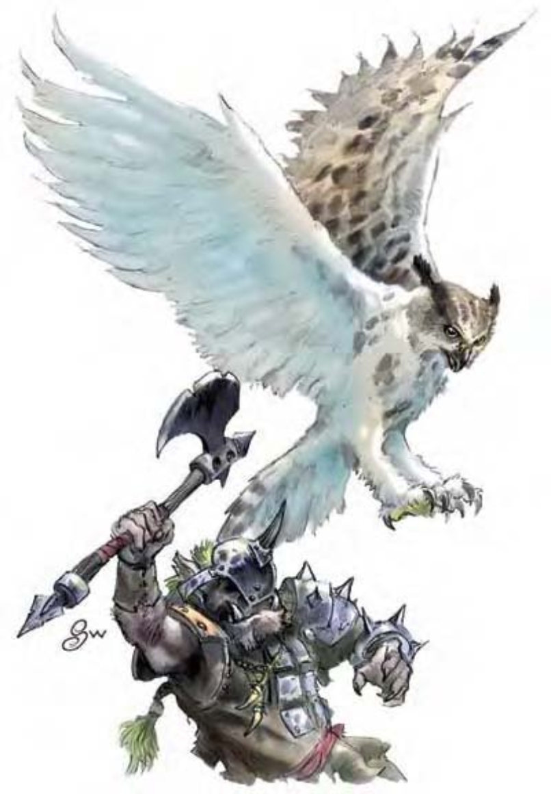

巨枭是夜行性猛禽，其近乎无声的攻击与猎食能力让人心生恐惧。他们具有智慧，虽然天性多疑，但有时仍会与善良阵营的生物往来。
他们会攻击看起来具有威胁性的生物，特别是想侵入巢中偷蛋或雏鸟的家伙。巨枭的蛋或雏鸟在许多文明地区都可售得高价，因为可训练成为昂贵的飞行座骑。
一般的巨枭约9英尺高，翼展20英尺，与一般猫头鹰除了体型外，在各方面都相同。
巨枭通晓通用语与木族语。
巨枭会安静地滑行到猎物上方几英尺之处，直接由他们头上进行攻击。
巨枭一般都只在巢穴附近狩猎或巡逻，且通常忽略不具威胁性的生物。巨枭夫妇则会共同战斗，并誓死守卫巢穴。有时巨枭会因为特殊原因结伙出击，像是驱赶邪恶人形生物群。
远距昏暗视觉 (超自然)：在微光下，巨枭可见距离为人类的五倍。
技能：巨枭在进行「聆听」检定时具有+8种族加值，「侦察」检定时具有+4加值。
*飞行时，巨枭进行「潜行」检定具有+8种族加值。
虽然具有智慧，巨枭仍需受训才能载人战斗。巨枭对训练者的态度必须为友善 (可通过「交涉」检定达成)，才能进行训练。训练友善的巨枭需时六周，并须通过「驯养动物」检定 (DC=25)。骑乘巨枭需使用特别鞍座。巨枭可背负骑师进行攻击，但骑师若未通过「骑术」检定，则无法同时战斗。
巨枭蛋在开放市场中约值2500金币，雏鸟则值4000金币。养育及训练单只巨枭的专业训练费用为1000金币。
负重能力：轻度负荷为300磅、中度负荷301-600磅、重度负荷601-900磅。
| 生命骰 | 4d10+4 (26HP) |
| 先攻 | +3 |
| 速度 | 10英尺 (2格)、飞行70英尺 (普通) |
| 防御等级 | 15 (-1体型、+3敏捷、+3天生)、接触12、措手不及12 |
| 基本攻击/擒抱 | +4 / +12 |
| 攻击 | 爪抓+7近战 (1d6+4) |
| 全力攻击 | 2爪抓+7近战 (1d6+4) 及啮咬+2近战 (1d8+2) |
| 占据/触及 | 10英尺 / 5英尺 |
| 特殊攻击 | ― |
| 特殊能力 | 远距昏暗视觉 |
| 豁免 | 强韧+5、反射+7、意志+3 |
| 属性 | 力量18、敏捷17、体质12、智力10、感知14、魅力10 |
| 技能 | 自然知识+2、聆听+17、潜行+8*、侦察+10 |
| 专长 | 警觉、翻转 |
| 环境 | 温带森林 |
| 组织 | 单独、成双或一伙 (3-5) |
| 宝藏 | 无 |
| 阵营 | 通常中立善良 |
| 进化 | 5-8HD (大型)；9-12HD (超大型) |
| 等级修正值 | +2 (部属) |